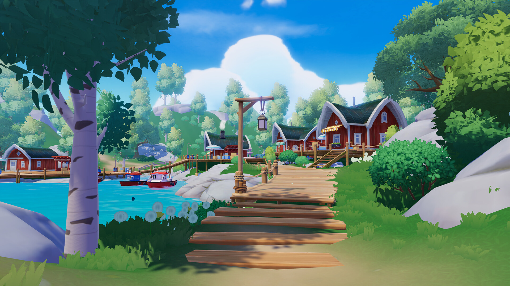

두근두근타운 추석 한정 이벤트 가을빛에 물든 달 가구 받는 법, 바다등 기원 이벤트 이용법, 협회 출석 크리스탈 2배까지
두근두근타운 하시는 분들이라면 이번 주 들어 타운 분위기가 확 달라진 거 다들 눈치채셨을 텐데요, 지난주부터 [풍성한 가을] 추석 한정 이벤트가 시작되면서 상점이랑 협회 출석 화면까지 새 단장을 했더군요. 저도 소식 듣자마자 바로 접속해서 이것저것 얼추 둘러봤는데, 가을빛에 물든 달 테마 가구부터 [바다등 기원] 이벤트, 협회 출석 크리스탈 2배 혜택까지 챙길 게 은근히 많아서 오늘 한 번에 정리해드리려고 해요. 기간이 넉넉한 편이라 지금 시작하셔도 전혀 안 늦으니까 천천히 따라와 보세요.
두근두근타운, 가을 분위기 물씬 나는 추석 시즌이 시작됐어요.
이미지 출처: 두근두근타운 스팀 공식 스토어 · 네이버 본문엔 받아서 재업로드 권장
두근두근타운 추석 한정 이벤트, 기간이 정확히 언제까지죠?
두근두근타운 추석 한정 이벤트는 2026년 9월 25일 06시부터 10월 12일 05시 59분까지, 게임 서버 시간(SVT) 기준으로 진행됩니다. 오늘이 9월 29일이니까 이벤트가 시작된 지 나흘째고, 아직 2주가 채 안 되게 남은 셈이라 지금 들어가셔도 여유 있게 다 챙기실 수 있어요.
여기서 하나 더 챙기실 게, [출석 달빛 크리스탈 2배 이벤트]로 진행되는 협회 출석 화면 달빛 크리스탈 2배 지급은 따로 9월 28일 06시부터 시작돼서 이벤트 전체 기간이랑 종료일은 같지만 시작일이 다르거든요. 헷갈리기 쉬운 부분이라 표로 한 번 정리해봤어요.
| 구분 | 기간(SVT 기준) |
|---|---|
| 추석 한정 이벤트 전체 | 9월 25일 06:00 ~ 10월 12일 05:59 |
| 협회 출석 크리스탈 2배 | 9월 28일 06:00 ~ 10월 12일 05:59 |
가을빛에 물든 달 가구, 추석 한정 상점에서 어떻게 받나요?
가을빛에 물든 달 테마 가구는 추석 한정 상점에서 구매하는 방식으로 받을 수 있어요. 공식 공지를 보면 이벤트 상점에 추석 한정 의상·레시피·펫 의상 같은 상품이 새로 등장했다고 나와 있고, 별도로 [추석 한정] 상점에는 [가을빛에 물든 달] 테마 가구 등 신규 상품이 올라왔다고 나와 있습니다. 다만 이 둘이 완전히 같은 상점을 가리키는 건지는 공지가 밝히지 않고 있어서, 정확히는 접속해서 상점 메뉴를 직접 확인해보시는 게 좋아요.
다만 가구가 구체적으로 몇 종류이고 개별 품목 이름이랑 가격이 어떻게 되는지, 그리고 상점으로 들어가는 메뉴 이름까지는 공식 공지가 '가구 등 신규 상품'이라고 뭉뚱그려서만 표기하고 있어서요. 접속하신 다음 상점 아이콘 쪽에서 추석 한정 탭을 찾아 직접 확인하시는 게 제일 확실합니다.
확인 위치: 게임 내 추석 한정 상점 화면 · 확인되면 아래에 표로 채워주세요.
상점에 진열된 가구 목록과 가격이 한눈에 보이는 화면이에요.
[바다등 기원] 이벤트, 완제품 바다등 5종이랑 연꽃 바다등은 뭐가 다른가요?
[바다등 기원] 이벤트의 이벤트 상점에서는 완제품 바다등 5종을 바로 구매할 수 있고, 연꽃 바다등은 제작서를 사서 직접 만드는 방식이라는 점이 가장 큰 차이예요.
완제품 바다등을 띄우면 바다로 흘러가면서 확률적으로 [별정령의 응답]이라는 한정 효과가 붙는다고 해요. 연꽃 바다등은 축복 메시지를 적어서 해안가에 남겨두면 그 자리를 찾아오는 다른 타운키퍼한테 메시지가 전달되는 구조라 조금 더 감성적인 콘텐츠였어요. 다만 이 메시지가 계속 남아있는 건 아니고 한동안만 해안가에 머무르다 사라지는 한시적인 콘텐츠인데, 다른 타운키퍼가 등불에 불꽃을 보태주면 머무르는 시간이 소폭 연장된다고 하더라고요. 또 멀리 흘러간 바다등은 목록에서 최근 10개까지 기록을 확인할 수 있고, 원한다면 홈에 배치해서 감상하는 것도 가능해요.
바다등 5종 각각의 이름이랑 연꽃 바다등 제작서에 어떤 재료가 들어가는지는 공식 공지에 자세히 안 나와 있어서, 이 부분은 상점이랑 제작 화면에서 직접 확인해보시는 게 좋아요.
확인 위치: 게임 내 [바다등 기원] 이벤트 상점·제작 화면 · 확인되면 아래에 채워주세요.
바다등을 띄우면 이렇게 바다로 흘러가는 연출이 나와요.
협회 출석 화면 크리스탈 2배, 정확히 얼마나 더 받나요?
9월 28일부터 10월 12일까지는 협회 출석 화면에서 받는 달빛 크리스탈 지급량이 평소의 2배로 늘어나요. 타운키퍼라면 협회 메뉴 들어가서 출석 체크하는 김에 이 기간엔 좀 더 든든하게 챙길 수 있는 시기랍니다.
평소 지급량 대비 정확히 몇 개가 더 늘어나는지 구체적인 수치는 공식 공지에 따로 안 나와 있어서, 출석 화면에 들어가서 직접 눈으로 확인해보시는 게 제일 정확합니다. 하루 한 번 체크하는 구조로 운영되는 게 일반적이니까 이 기간엔 매일 접속해서 협회 화면 챙기는 습관을 들이시는 게 좋아요.
2배 기간에는 출석 화면에서 크리스탈이 이렇게 더 들어와요.
구매 한도나 유의사항도 따로 있을까요?
1인당 구매 한도나 중복 수령 제한 같은 유의사항은 이번 공식 공지에 따로 언급이 없었어요. 없다고 단정하긴 어렵고, 상점에 들어가서 구매 버튼을 눌러보시면 한도가 있는지 바로 표시될 테니 그때 확인하시는 게 안전합니다.
참고로 가구랑 바다등을 살 때 어떤 재화가 쓰이는지도 상점마다 다를 수 있어서, 정확히는 상점 화면에서 가격표를 직접 보시는 게 확실해요. 이번 건 따로 입력하는 쿠폰 코드는 없고, 게임 안 상점에서 직접 사는 방식이라는 점도 참고해두시면 좋겠네요.
덧붙이자면 같은 기간에 보름달 구경이라는 추석 한정 포토존 콘텐츠도 같이 진행되고 있더라고요. 이벤트 상점 챙기시는 김에 한 번 들러보시는 것도 나쁘지 않을 것 같아요.
자주 묻는 질문
Q. 두근두근타운 추석 이벤트가 끝나면 못 쓴 재화는 사라지나요?
이번 공지에는 이월이나 소멸에 대한 안내가 따로 없어서 확정된 건 아니에요. 예전 시즌 종료 때도 비슷하게 정리해준 적이 있었던 걸로 기억하는데, 이번에도 똑같이 적용될지는 확실하지 않으니 이벤트 끝나기 전에 미리 다 쓰시는 게 마음 편합니다.
Q. 바다등을 띄우면 무조건 좋은 효과가 붙나요?
공식 안내로는 확률적으로 [별정령의 응답]이라는 한정 효과가 붙는다고 되어 있어서, 띄울 때마다 100% 보장되는 건 아니고 운이 어느 정도 따라줘야 하는 거잖아요.
Q. 협회 출석을 하루 못 챙기면 다음날 두 번 받을 수 있나요?
그렇게 보정해준다는 안내는 따로 없어서, 하루를 놓치면 그날 몫은 그냥 지나간다고 보시는 게 안전해요. 2배 기간 동안은 잊지 말고 매일 들어가서 체크하시는 수밖에 없습니다.
Q. 보름달 구경 이벤트는 참여 조건이 어떻게 되나요?
같은 9월 25일부터 10월 12일까지 진행되는 건 확인됐고, 참여 방법도 공지에 나와 있어요. 이벤트 화면에서 [추적가기]를 탭하면 추석 이벤트 포토존을 추적할 수 있는데, 인증샷을 찍고 마을의 아름다운 풍경을 함께 감상하면 되는 거더라고요.
Q. 지금 시작해도 늦지 않았나요?
이벤트가 10월 12일까지 넉넉하게 남아있어서 전혀 안 늦어요. 오히려 크리스탈 2배 기간(9월 28일~10월 12일) 안에 들어와 있어서 타이밍은 딱 좋은 편입니다.

가을빛 가득한 타운에서 여유롭게 산책하는 것도 이 시즌의 묘미예요.
이미지 출처: 두근두근타운 스팀 공식 스토어 · 네이버 본문엔 받아서 재업로드 권장
정리하자면 가을빛에 물든 달 가구는 추석 한정 상점, 바다등은 [바다등 기원] 이벤트 상점, 크리스탈은 협회 출석 화면 이렇게 챙길 자리가 딱 나뉘어 있어서 동선만 잡아두면 생각보다 금방 다 둘러보실 수 있어요. 저도 오늘 한 바퀴 돌아보고 왔는데, 기간이 10월 12일까지 넉넉한 편이니까 천천히 하나씩 챙겨보시면 좋겠네요.
✔ 두근두근타운 같이 보기 좋은 내용
· 두근두근타운 낚시 도감 공략 레벨1~10 위치 날씨 시간대 총정리
· 두근두근타운 곤충 채집 도감 레벨1~4 위치 날씨 시간대 총정리
· 두근두근타운 산리오콜라보 무과금 하루 루틴 — 어디까지 모을 수 있나
참고한 곳
· 두근두근타운 스팀 공식 공지 — 추석 한정 이벤트 안내
· 두근두근타운 스팀 공식 스토어 (2026.09.29 기준)